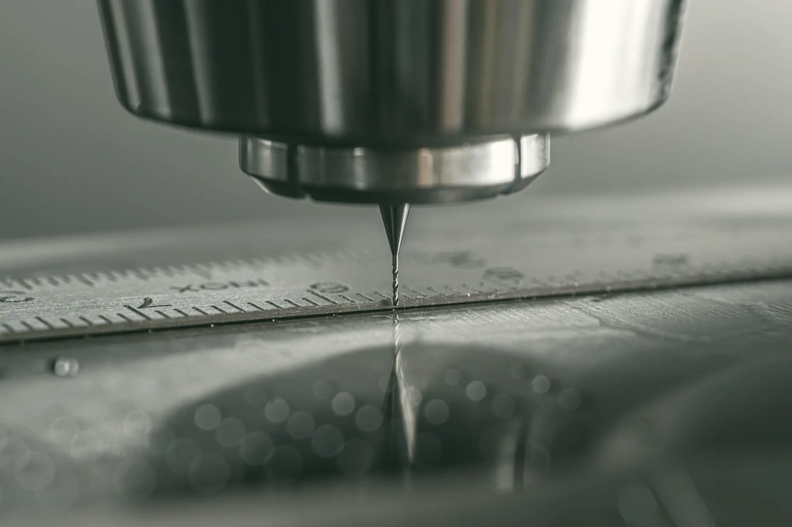
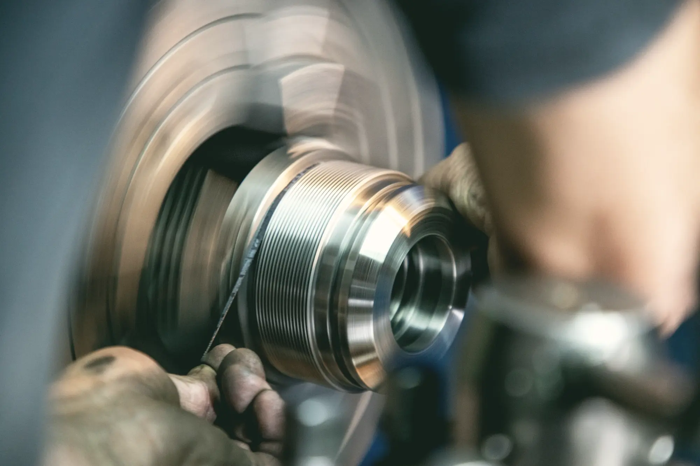
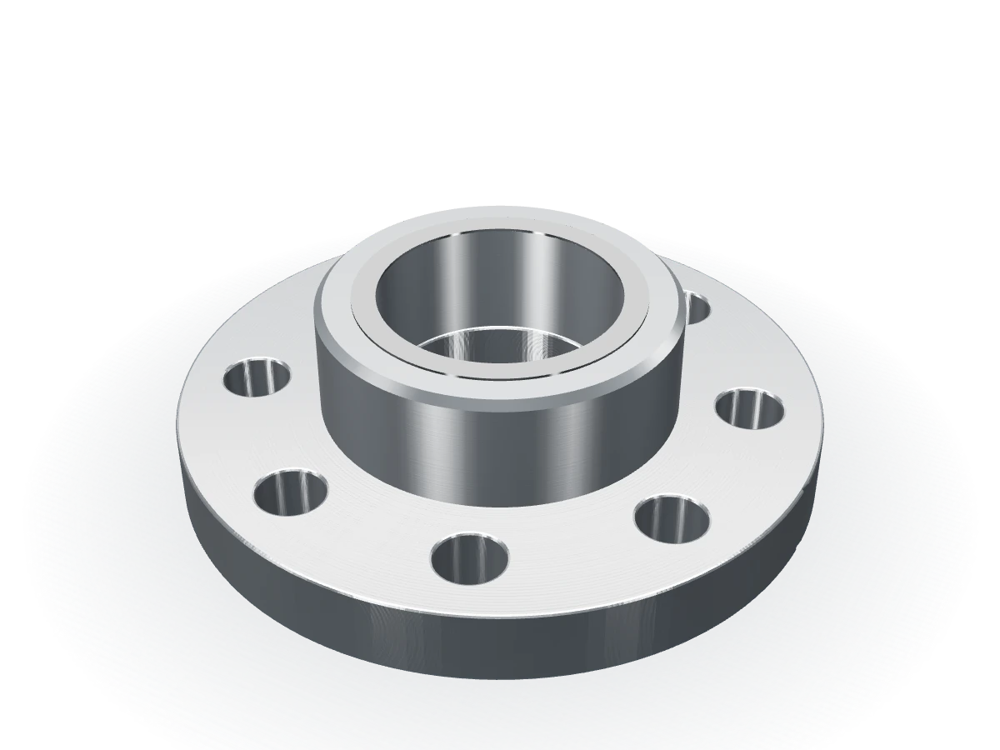
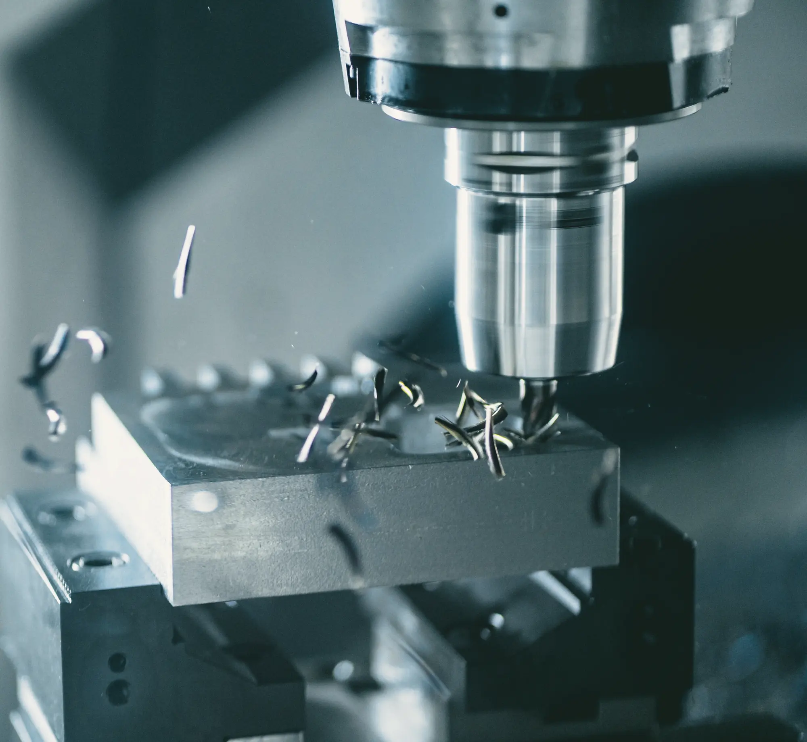
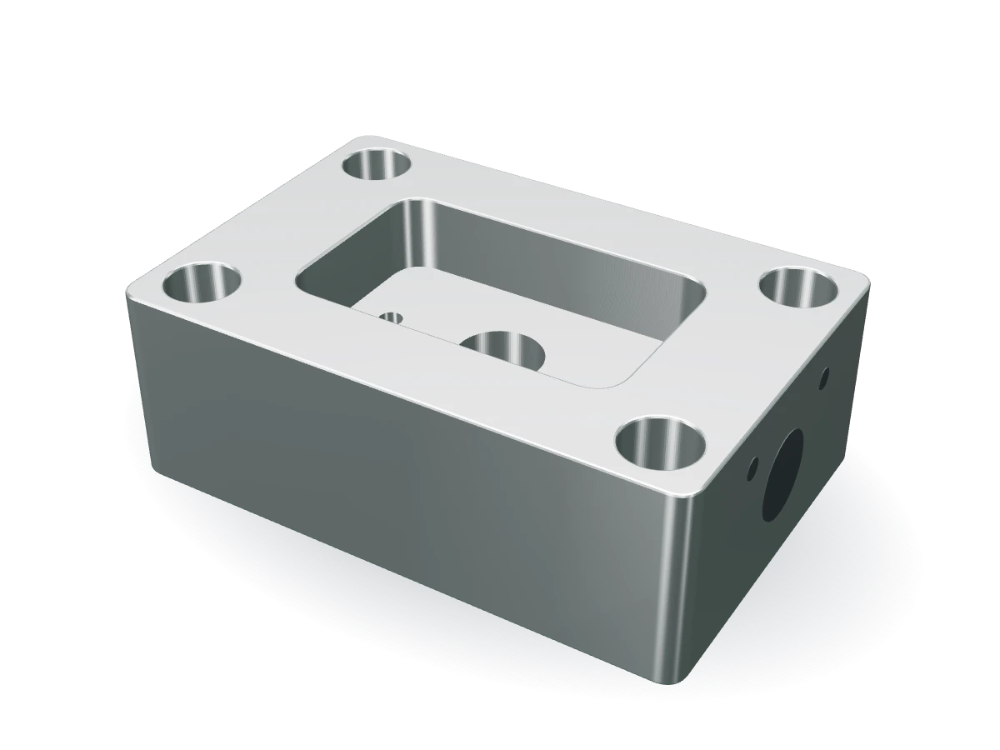
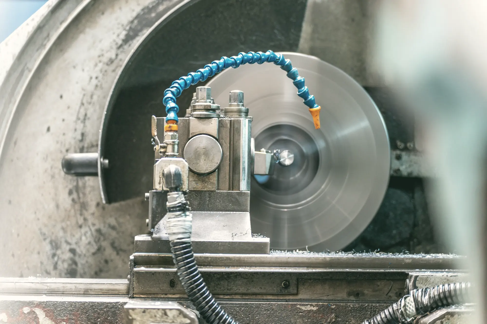
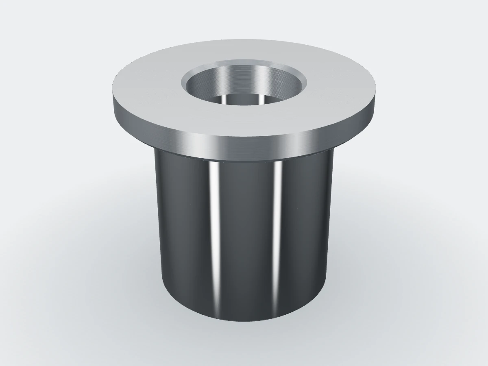
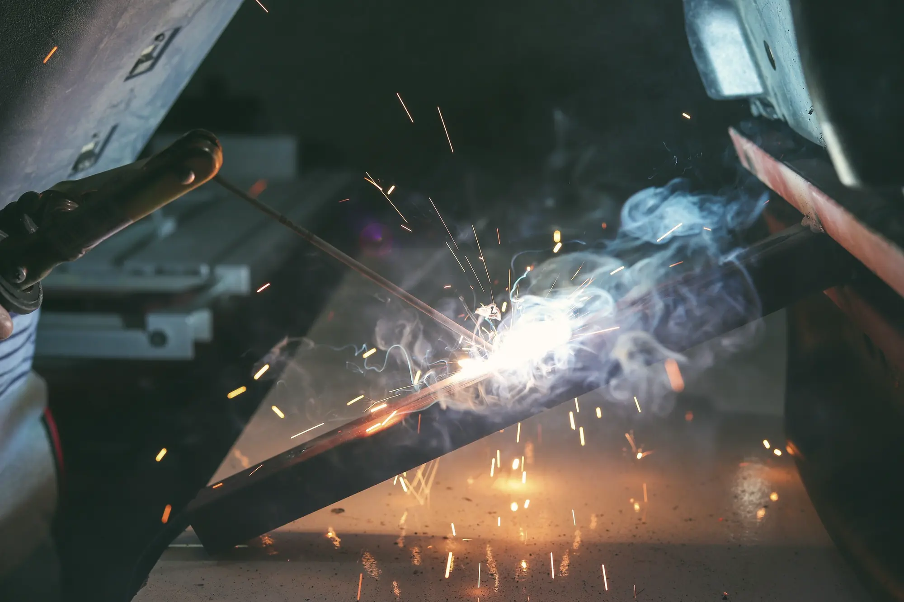

Soustružení, frézování, broušení a svařování
Díl, který se musí soustružit, kalit, brousit a ještě přivařit ke konzoli, vyrobíme celý. Kalení a povrchové úpravy objednáme u partnerů v kraji. Termín i fakturu máte od nás.

CNC soustružení
Hřídele, čepy, pouzdra a příruby od jednoho kusu po tisícové série.


Otočte tažením
Soustružnická centra mají poháněné nástroje, osu C a Y a protivřeteno. Díl proto často opustí stroj hotový včetně drážek, děr a plošek.
Malé rotační díly děláme z tyče s podavačem, stroj na ně běží i přes noc bez obsluhy. U sérií nad sto kusů to bývá znát na ceně.
- Průměr
- 3–320 mm
- Délka
- do 600 mm
- Z tyče
- do Ø 65 mm
- Přesnost
- IT6, Ra 0,8
Typické dílyHřídele čerpadel a převodovek, příruby, rozpěrky, čepy, pouzdra.
CNC frézování
Skříně, desky, konzole, přípravky a tvarové díly na tříosých i pětiosých centrech.


Otočte tažením
Na pětiosém centru obrobíme díl z pěti stran na jedno upnutí, takže díry a plochy na sebe navazují bez přeupínání.
Vertikální centra s velkým stolem používáme na desky, rámy a obrábění svařenců.
- Tříosé
- 1 020 × 560 × 510 mm
- Pětiosé
- Ø 500 × 380 mm
- Hmotnost
- do 300 kg
- Přesnost
- díry ±0,01 mm
Typické dílySkříně ventilů, upínací desky, konzole robotů, formy a přípravky.
Broušení na kulato
Ložiskové čepy, vodicí plochy a pouzdra, kde soustružení na toleranci nestačí.


Otočte tažením
Brousíme vnější i vnitřní průměry, i na dílech po kalení.
Bruska stojí ve stejné hale jako soustruhy. Díl nečeká týden na kooperaci a celou zakázku řešíte s jedním dodavatelem.
- Průměr
- do 200 mm
- Délka
- do 650 mm
- Přesnost
- IT5
- Házení
- do 0,005 mm
Typické dílyLožiskové čepy hřídelí, vodicí pouzdra, pístnice, kalené čepy.
Svařování a montáž
Svařované rámy, konzole a nosné konstrukce z oceli i nerezu.


Otočte tažením
Svařence vyžíháme a funkční plochy obrobíme na jedno upnutí, aby po svaření nic neuhnulo.
Na přání díly smontujeme s nakoupenými ložisky a pohony, vyzkoušíme a dodáme jako hotovou podsestavu.
- Metody
- MIG/MAG a TIG
- Svařence
- do 1 000 mm
- Materiál
- S235, S355, 1.4301
- Svářeči
- ČSN EN ISO 9606-1
Typické dílyRámy strojů, konzole, kryty, podsestavy s ložisky a pohony.
Materiály
Materiál nakoupíme s atestem 3.1 od ověřených skladů, nebo zpracujeme ten, který nám dodáte. Neběžnou jakost obvykle seženeme do týdne.
- Oceli
- S235, S355, C45, 42CrMo4, 16MnCr5, 34CrNiMo6
- Nerez
- 1.4301, 1.4305, 1.4404, 1.4571
- Hliník
- EN AW-6082, 7075, 2007, 5083
- Barevné kovy
- Mosaz CuZn39Pb3, bronz CuSn8, měď
- Plasty
- POM-C, PA6, PE 1000, PEEK, PTFE
- Odlitky
- Šedá a tvárná litina, hliníkové odlitky
Kalení a povrchové úpravy u partnerů
Kalení a popouštění, cementování, nitridace, galvanické zinkování, eloxování, černění, práškové lakování a pískování. Díly k partnerům vozíme sami a termín hlídáme my.
Nevíte, kterou technologii díl potřebuje?
Pošlete výkres a technolog navrhne postup. Do 48 hodin dostanete cenu za kus a termín.
Lenka Hájkováobchod 517 000 100 obchod@setina-obrabeni.cz